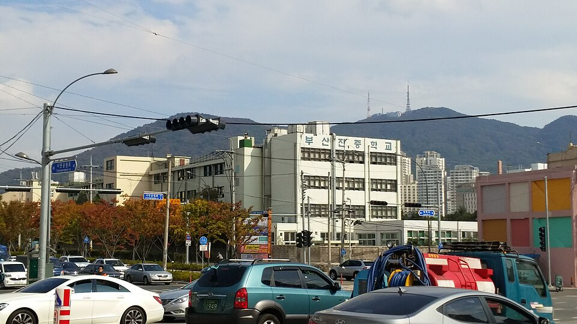

부산진구는 관리 중인 학교만 66곳으로 부산에서도 학교가 많은 자치구입니다. 고등학교가 17곳, 중학교가 19곳인데 개성고·부산진고·양정고처럼 오래된 학교와 개금고·부산진여고가 구 안에 흩어져 있습니다. 서면 학원가가 가까워 선택지는 많지만, 학원 반 편성과 진도가 맞지 않는 학생은 집으로 오는 수학과외를 따로 찾는 경우가 많습니다.
오늘은 부산진구로 직접 찾아가는 선생님 중 두 분을 소개합니다. 한 분은 수학을 전공한 수학 전담 선생님, 한 분은 수학과 과학을 함께 보는 선생님입니다. 방문 지역이 서로 달라서 사는 동네에 따라 선택이 갈립니다.
부산진구에서 중등·고등 수학과외를 한 분에게 길게 맡기고 싶을 때 맞는 선생님입니다. 초1부터 고3까지 수학 한 과목만 보는 선생님이라, 학년이 올라가도 선생님을 바꾸지 않고 이어 갈 수 있습니다. 고등 과정은 문과 수학과 확률과 통계까지 지도합니다.
눈여겨볼 점은 수학 정교사 2급 교원 자격증을 가진 수학 전공자라는 것입니다. 개념을 왜 그렇게 쓰는지부터 설명하는 편이고, 수업마다 진도와 약한 부분을 정리한 리포트를 보내 학부모님과 꾸준히 소통합니다. 다만 수업 가능 시간이 월요일 저녁에 몰려 있어 시간대 확인이 먼저입니다. 자바스크립트 코딩 수업도 함께 맡을 수 있습니다.
김ㅇ현 선생님 상세 프로필 →부산진구 개금동·당감동 쪽에서 고1 과학과외와 수학을 한 분에게 함께 맡기고 싶을 때 맞는 선생님입니다. 통합과학을 물리·생명과학·지구과학까지 나눠 볼 수 있어서, 이과 과목을 두 분께 따로 맡길 필요가 없습니다.
수업은 기초 원리부터 심화까지 단계를 나눠 올라가는 방식입니다. 기초가 비어 있는 학생은 앞 단원부터 메우고, 이미 따라가는 학생은 심화로 넘어갑니다. 국어·영어·사회도 중등 이상은 함께 볼 수 있어 내신 전 과목을 한 분에게 맡기는 것도 가능하고, 검정고시를 준비하는 학생도 지도합니다. 첫 수업 전 테스트를 빠르게 잡아 주는 편입니다.
이ㅇ원 선생님 상세 프로필 →
학교마다 출제 방식과 수행평가 비중이 달라서, 학교별로 준비법을 따로 정리해 두었습니다.
👉 부산진구 수학과외 선생님 · 부산진구 과학과외 선생님 · 관리 학교 66곳 전체 보기